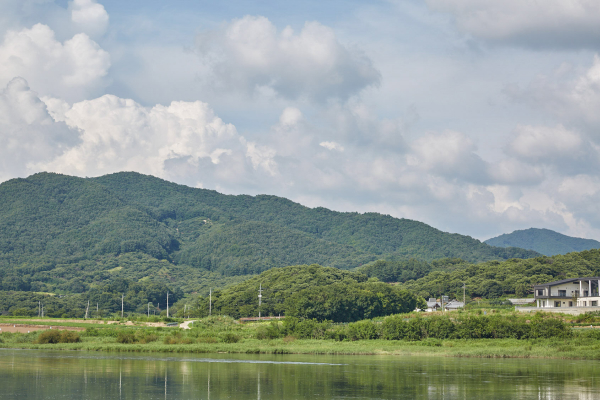

Rest in life
삶 속의 휴식
바쁜 일상에서 벗어나
여유로운 쉼이
필요한 분들을 위한 곳
게스트 하우스 친구집 입니다.
게스트하우스 친구집의 특별함
________________________________________

주변 경관
남한강의 물줄기가 보이는 터에 자리잡아 겹겹이 쌓여진 산과
흐르는 강이 펼쳐지는
아름다운 경관을 조망할 수 있습니다.
정원
계절마다 다양한 야생화가 피는 정원과
고즈넉한 풍경이 스며든 휴식을 취해보시길 바랍니다.


조식
직접 만든 조식을 준비해드립니다.
단호박스프와 통새우가 들어간 유기농
샐러드, 수제 요거트와 매일 볶은
구수한 옥수수차가 있습니다.
한옥에서
여유롭게 즐기는 정갈한 조식은 여행을 더욱 즐겁게 해줍니다.